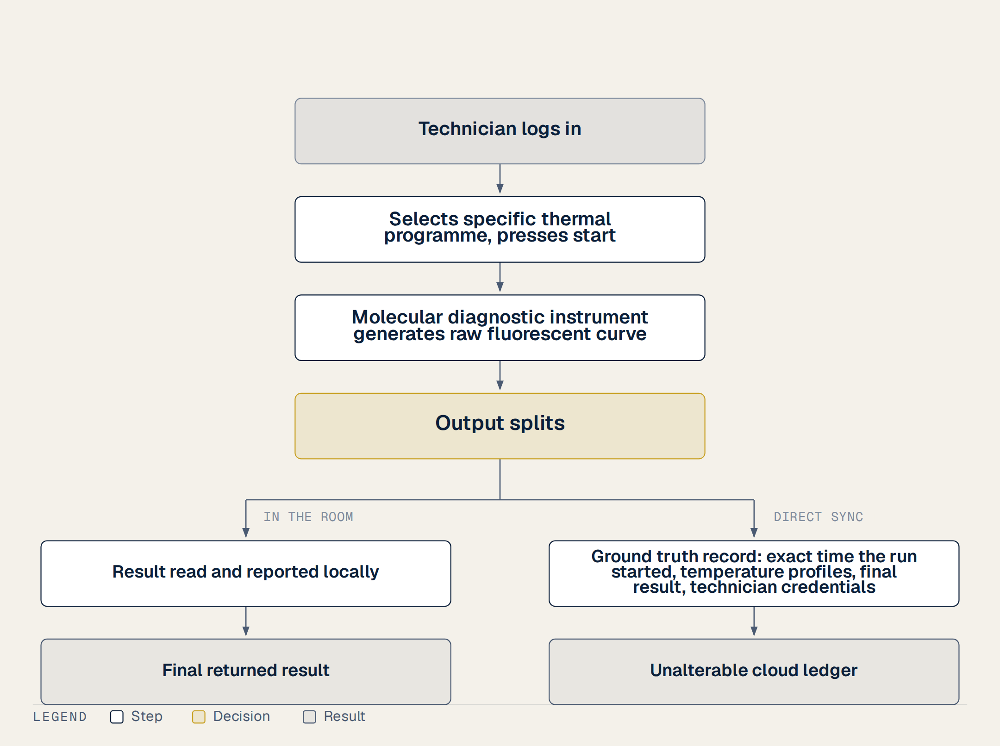
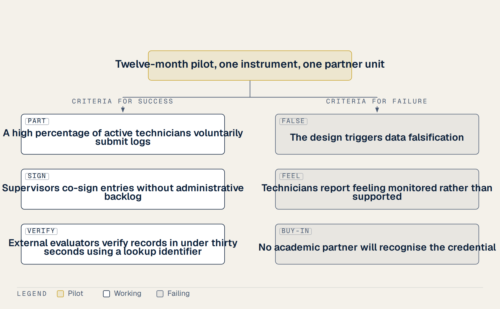
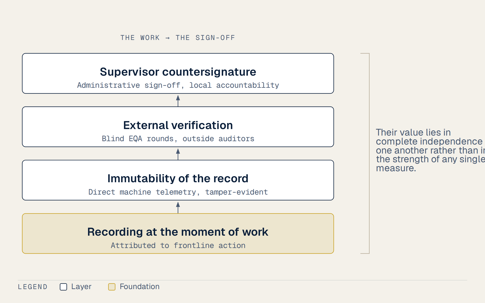

7 A Small Pilot, and an Invitation
On an ordinary Tuesday afternoon inside a single partner laboratory, a single molecular diagnostic instrument begins to run. A technician logs in. Her unique credentials are recorded. She selects the specific thermal programme for a polymerase chain reaction assay and presses start. Two hours later, a raw fluorescent curve appears on the screen. Each of these small facts immediately leaves the room by itself. They do not wait for anyone to write a report. They do not wait for an administrative sign-off. The exact time the run started, the temperature profiles, and the final result are synchronized directly to the cloud. This data flows instantly, without passing through any human hand that could edit, delete, or adjust the files. The machine simply accounts for its own work. This is the one part of the proposed system that nobody can quietly adjust to meet an institutional target, and it is worth being precise about what that buys, because it is easy to inflate. The record is trustworthy about a narrow set of facts: that a run began, at that minute, on that machine, under that account. It is not ground truth about competence. The instrument does not know whether the master mix was made correctly, whether the specimen matched the form, or whether the person logged in was the person at the bench. Everything to do with whether the work was done well is established elsewhere in this design, or not at all.

During those long shifts of processing assays, I watched how easily large software initiatives collapse. When we outline our first step, we must keep it plain and small. It must not be a laboratory information system, which has a soft boundary that anyone can argue already exists. In fact, thirty-eight of our laboratories in Vietnam have already implemented open-source LIMS with support from the US CDC. However, these existing platforms lack machine-enforced audit trails, and they are managed provincially without strict individual accountability. Trying to deploy another massive software suite will only drag us into endless bureaucratic debates.
Instead, our proposed pilot focuses strictly on telemetry from a single connected instrument at a single partner unit. The question of whether artificial intelligence should monitor or even operate such a system is real, but that discussion belongs strictly to a later phase. A first pilot must be small enough that failing is cheap. This is a contained experiment. We are proposing a single position, a single twelve-month term, utilizing existing training rails, and demanding no new national budget lines. If the pilot fails, the cost is bounded, and the technical lesson is documented. If it works, the mission gains a baseline of objective truth that nobody has ever built. What matters is the principle for choosing an instrument, not which machine gets named. We should choose the instrument the funder already paid for. By doing this, the funder who bought the machine receives the machine’s own account of how it was used, while the local operator receives evidence that she was the account under which it ran.
That is deliberately weaker than saying she gets credit for the work, and the difference is where a reviewer should push. In a laboratory where a senior technician’s session stays open through a shift while junior staff do the extraction and pipetting, the telemetry credits the login, not the hands. Attaching scholarships to that number without addressing it would invite exactly the behaviour it rewards: staying logged in. So the instrument record cannot be the unit of credit on its own. It has to be paired with the countersignature, where a supervisor attests that this named person did this work, and with the requirement that accounts are individual and sessions time out. Telemetry then does what it is good at, which is fixing a time that nobody can move afterwards, and the human attestation carries the part telemetry cannot reach. A pilot that measures throughput without measuring how often logins are shared will not have tested the thing that matters. One device can thus serve all three readers at once without extra friction. A polymerase chain reaction platform is the obvious example of such an instrument rather than a rigid requirement. It sits exactly where this mission touches the ground. Molecular diagnosis is the core of early outbreak detection. Fortunately, these PCR machines are already physically in place from the pandemic.
This is the honest reading of our limits. No trial has evaluated how a direct telemetry model of this kind affects reporting accuracy or staff retention, and that absence applies to every proposal in this chapter rather than to this paragraph alone in low-resource public health laboratories. We are proposing a logical, evidence-informed design to test these ideas in our local context. By starting with one machine and one connection, we can prove our concept without risking our scarce resources on a sprawling, unmanageable failure.
The most beautiful ideas on paper can easily die of institutional friction. To prove that a digital performance register can truly work in our health system, we must not launch a grand, sweeping national program on day one. Instead, we must propose a highly contained, twelve-month pilot project described with utmost modesty. We need a quiet, low-stakes experiment that operates within one established training programme, such as our Field Epidemiology Training Programme alumni network, or restricted to a single province. By keeping the boundaries of our pilot small, we ensure that a potential failure will only teach us valuable lessons cheaply rather than destroying public or political trust.
To make this pilot concrete, we must focus on a very small, practical set of indicators. We should not attempt to track dozens of complex clinical outcomes. Instead, we can record basic participation metrics, such as the successful logging of diagnostic assays and the documented completion of rotating external quality assessment rounds. More importantly, we must explicitly state on day one what counts as success and what counts as failure. Two different things move through this system and the pilot has to measure both, because an earlier draft blurred them. The instrument’s telemetry is automatic: it leaves the machine whether anyone wants it to or not, and nobody submits it. The professional record built on top of it is voluntary, because the technician decides whether to claim a run as her own work, and her supervisor decides whether to countersign that claim. So the pilot counts as working if a high proportion of active technicians choose to claim and keep their records, if supervisors countersign without backlog, and if an external evaluator presented with a credential can verify it quickly. Conversely, the system fails if it triggers data falsification, if technicians report feeling monitored rather than supported, or if we cannot establish active partnerships with academic institutions to recognize these credentials.

Furthermore, we must agree in advance on who reviews the results. We cannot grade our own homework. We should establish an independent oversight committee before the first entry is ever written to our ledger. This committee should consist of independent public health experts, representatives from our international sponsoring institutions, and local medical audit authorities who hold no personal stake in the system’s success.
On what we are proposing, the record deserves a plain statement. Nor has anyone measured career tracking against retention in Vietnam’s preventive medicine sector. This twelve-month pilot is a contained, low-cost experiment. It runs on existing legal rails like our five-year Continuing Medical Education requirements, meaning it demands no new national budget line or sweeping legislative reforms. If the pilot fails, the financial and institutional loss is strictly bounded, and we will document the breakdown transparently. If it succeeds, we will have built a proven, scalable ladder that turns invisible daily labor into a portable professional asset for our frontline workers.
Honesty is our only real currency. In writing this proposal, I have to set out the limits of the evidence we rely on. We are proposing a system to recognize and retain frontline health workers, but we cannot hide behind technical optimism. We must state our boundaries clearly. To begin with, the global guidelines issued by the World Health Organization regarding health worker retention rest on shaky ground. The organization openly admits that almost all of its own recommendations in this critical area are based on low or very low certainty evidence. The comprehensive Cochrane review conducted by Grobler and colleagues in 2015 arrived at the exact same conclusion. There are simply no high-quality randomized controlled trials to prove which interventions actually keep workers at their posts (1,2).
This lack of comparative research is particularly true for our core incentive design. In our proposal, we choose to offer tiered scholarships rather than traditional cash bonuses, but we must admit a hard reality. There is no meta-analysis anywhere in the global literature that directly compares scholarships against cash bonuses for frontline health workers. We are choosing this path because we believe educational opportunities provide a more sustainable, non-coercive ladder, but this choice is a logical hypothesis rather than a proven fact.
Furthermore, we must look honestly at the history of compulsory service commitments. Many governments try to solve the rural retention crisis by forcing health workers into mandatory service contracts in exchange for training or support. However, the evidence tells us this approach is deeply flawed. A comprehensive review of compulsory service programmes across seventy countries, published by Frehywot and colleagues in 2010, found that most of these programmes were never rigorously evaluated. The review demonstrated that while mandatory service contracts succeed in temporarily filling vacant posts during the period of legal obligation, they lose these people almost immediately after the obligation ends. Forcing people to stay simply creates an unhappy, transient workforce. The research shows that what actually predicts long-term retention is working conditions, equipment that functions, and salaries paid on time (3,4).
Therefore, we must completely reject the idea of using our professional register as a lock. We should never frame a service commitment as a legal trap to bind a technician to a remote clinic. Instead, our system must be designed to make their service visible and rewardable. We want to turn their daily, invisible labor into a verifiable professional asset that they carry with them. If we try to lock people in, we will fail, just as seventy other countries have failed. We must build a ladder of opportunity, not a cage of administrative coercion.
Anyone can write a proposal. In this day and age, a machine can easily generate a perfect document in seconds. The rare thing is never the initial idea itself, but rather the person who stays with it through every institutional barrier and slow budget cycle. In the field of implementation research, this dedicated person is called a local champion. The implementation literature repeatedly finds that a local champion matters to whether an intervention survives. I am not able to rank that factor against funding or written guidance, and I should not pretend to a hierarchy the evidence does not give me. Organizational research explains the underlying mechanism as psychological ownership. The concept is straightforward. People invest themselves differently in what they consider to be their own. When an idea is treated as a personal possession, people tend to bring a care and persistence that instruction does not produce. That is an observation about the systems I have worked in, offered as a hypothesis rather than a law.
I lived inside this problem for five years, and this proposal is born from that physical reality. When we needed barcodes for a testing surge, I bought the printing software myself rather than wait for the budget cycle. I mention it for one reason only, and it is not a claim to virtue: buying it was the cheap and slightly embarrassing option, the sort of thing people do in every health system when a process is slower than the work. What it taught me is where such systems actually break, which is never in the part anyone writes a plan about.
What I am proposing is contained and low risk. Hiring a local specialist for a defined term to pilot this registry on our existing legal rails is a cheap option on a massive potential upside. This is a contained experiment with one position, one term, and no new national budget line. If it succeeds, our public health mission gains a verified history of frontline labor that nobody has ever built before. If it does not succeed, the financial and organizational cost is strictly bounded, and we will document the lessons learned transparently.
However, I must state an essential honesty caveat. Psychological ownership has a well-documented dark side in organizational behavior. The research warns us that having deep psychological ownership over an idea often makes the creator blind to its practical defects. Because of this risk, I might be too close to this project to see its potential flaws. That is why our design must strictly require independent, third-party evaluation. We have to invite outside medical auditors to review the results of our pilot. That commitment is there because I could be wrong about my own design and would rather find out early. Ideas are common, but staying with an idea until it becomes a functional tool for our frontline workforce is what truly matters.
During that time, I learned that the most convincing evidence does not need to be shouted. It only needs to be shown. In the chaotic months of 2021, when our daily testing volume threatened to overwhelm our small team, I did not write a memo requesting a new software procurement. I did not wait for our slow provincial budget cycle to turn. Instead, I paid for the barcoding software myself out of my own pocket and built the first version of our sample-tracking database in a single weekend. That system solved our administrative bottleneck. More importantly, it still runs at our provincial CDC today, five years later, without requiring a single dong of additional government funding. This is not a theoretical proposal or a speculative dream. It is a functional piece of public health infrastructure that has survived the hardest test of all, which is the test of daily use.
Now, we are proposing to expand this concept into a formalized registry to track and reward the continuing medical education and field contributions of our technicians. When we evaluate this next step, we must frame the administrative risk in precise management terms. This is not a wild, unconstrained gamble. Rather, it is a highly contained experiment consisting of exactly one staff position for one defined term. The entire pilot will run on existing legal and regulatory rails, leveraging our current continuing medical education requirements.
If the experiment succeeds, our public health mission gains a powerful asset that nobody in the global health sector has built yet. We will have a verified, portable record of frontline labor that turns invisible daily service into a tangible professional asset. If the experiment fails, the financial and organizational cost is strictly bounded to a single salary. Furthermore, we commit to documenting the entire implementation process and publishing the breakdown transparently so that other provincial programs can learn from our mistakes.
The hardest part of any project is knowing when to let others judge your work. The same attachment that got the barcode database built over a weekend is the attachment that makes me a poor judge of where it fails, and the organizational research on psychological ownership describes both halves of that. Investment brings persistence and adaptive energy. It also brings blindness, because we lose the ability to see our own creations from outside. This is why the proposal requires independent evaluation rather than merely permitting it. (5,6)
This is exactly why the independent evaluation I promised earlier in this proposal is a strict requirement, not a polite courtesy. It is a necessary friction. We must invite outside medical auditors, independent public health experts, and local audit authorities who have no stake in this system to tear it apart. I would rather find out early that the design is wrong than defend it late. I need independent eyes to verify whether a rotating external quality assessment record can truly prevent data entry fraud without causing staff anxiety. It is the only way to test whether our proposed methods of spot audits and supervisor co-signatures can survive the administrative realities of a busy provincial clinic.
This final note is therefore designed as an open invitation rather than a rigid, top-down implementation plan. I must be modest about what I can see from my laboratory workbench. I do not know your current institutional priorities, your immediate budget constraints, or the political timelines you must navigate. I cannot pretend that a single technician from a provincial laboratory has the full picture of our national health security strategy. I do not know how you weigh educational scholarships against other retention incentives, or how you view our legal continuing medical education rails. But I do know the daily reality of the frontline workforce and the heavy burden of invisible labor. If you look at our preventive medicine network and see a problem here that is genuinely worth solving, I would like to be a part of solving it with you. I would like to know whether this proposed framework fits your vision for our health workers, or if we need to adjust its shape to serve them better.
During those long, exhausting shifts of running diagnostic assays, I learned to separate what we can prove from what we can only guess. One final note, marked clearly as speculation rather than claim. It is a thought that I want to leave on the table, but it should be read as no more than a modest paragraph. In the chaotic days of 2021, a major international donor publicly demanded that a massive emergency relief plan come with accounting transparent enough for the public to see exactly where the money went. In response, a detailed plan was produced. It had extensive forecasts, budgets, and spreadsheets. Yet, even after this plan was approved, the money still did not move. I am tempted to read that as evidence that the missing link was never the forecast but the absence of a verifiable record of what had actually been delivered on the ground, by whom, and when.
I believe the same basic design principles we are proposing here would apply wherever frontline public health work is currently invisible. In many remote clinics and laboratories, people are working in the dark, and their efforts are completely unrecorded by central administrators. If we had a simple, decentralized way to verify their daily contributions, we could unlock resources that currently sit idle in capital cities. But I must be completely honest. That is a broad, speculative thought for a later date, and it is absolutely not a claim for now. There is currently no trial evidence, no randomized controlled study, and no peer-reviewed data to support this theory of global health financing. It is my own reflection after years of watching paper-based systems break down under the pressure of a real pandemic.
Therefore, this proposal should be judged only on the very small, concrete thing it actually asks for today. We are not asking to revolutionize international aid or restructure global health security. We are simply asking to fund a single staff position for a twelve-month pilot in one province, running on our existing legal continuing medical education rails to make the invisible labor of our local technicians visible. We want to test whether a simple, secure register can help our staff build a portable professional asset. This is a tiny, low-risk step that requires no new laws or massive budgets. If it fails, we will have learned why cheaply. If it works, we will have shown how to build a ladder of opportunity for those who currently have none. I hope we can start with this small, manageable experiment.
I have watched national health strategies that were beautifully written change nothing at all. Who implements a system matters as much as how it is designed. This truth is best explained through two core ideas that name themselves in the study of organizations.
The first idea is that there is a specific kind of practical knowledge that simply cannot be written down in any manual and can only be acquired by actually doing the work. In our provincial laboratory, we saw this truth play out during the height of the crisis. No national preparedness plan or academic textbook had ever described the administrative and technical steps of linking rapid spreadsheets to a physical barcode printer. Yet, this simple desk task, executed in a back office by someone wearing ordinary clothes before any patient sample even arrived, turned out to be the critical bottleneck for our entire provincial pandemic response. High-level plans can easily describe clinical trials and epidemiological models, but they consistently ignore the silent, mechanical logistics that actually keep a laboratory running.
The second idea comes from a long argument in political economy regarding state capacity and institutional design. Scott’s argument in Seeing Like a State is that grand schemes fail because the knowledge they need cannot be written down. It lives in the hands of the people doing the work, and it does not survive being turned into a form. Evans and Rauch found in 1999 that states which recruit on merit and offer predictable careers tend to grow faster. Which way the causation runs is still argued over, and I am not going to pretend a study of national bureaucracies settles anything about one provincial laboratory. Top-down planners often assume that a standardized blueprint can be handed to anyone to produce the same result, but this assumption ignores the unique context of each clinic (7).
This proposal is an attempt to write down the small part of the system that can actually be written down in software and regulations, written by someone who learned the unwritten rest of the reality the only way it can be learned: by living it. I did not learn any of this from a book, and the success of the design rests on the technicians who would have to carry it, not on the person who drew it.
The machine records when it ran, which thermal programme was used, who was logged in, and what the raw result was. This telemetry is synchronized directly to the cloud without passing through anyone who could edit it. That is captured where it is produced, and it is the one part of the proposal nobody can quietly adjust afterwards. I should say plainly what it is not. The instrument knows that a run began at a given minute under a given login. It does not know whether the master mix was prepared correctly, whether the specimen was the one on the form, or whether the person logged in was the person at the bench. Telemetry fixes the time and the account. Everything about competence is established elsewhere, or not at all.
The question of whether artificial intelligence should monitor or even operate such a system is real, but it belongs strictly to a later phase. A first pilot must be small enough that failing is cheap. This is a contained experiment. If it works, the mission gains something nobody has built yet.
The honest limit here is this. This remains untested, as stated at the outset. We are proposing a logical, evidence-informed design to test these ideas. By starting with one machine and one connection, we can prove our concept without risking scarce resources on a sprawling failure.
I want to be exact about what already exists and what is genuinely missing, so that nobody can accuse us of reinventing the wheel. Instrument telemetry that reports performance data back to international funders is not a new idea. In fact, one major connectivity platform already collects and aggregates data from molecular testing devices across forty-three countries. This platform automatically tracks raw results, error rates, reagent lot numbers, calibration dates, and instrument serial numbers. It is a highly sophisticated data stream.
However, that existing system has a massive, critical blind spot. It attributes all of this testing activity to an inanimate serial number and a physical facility site, rather than to a named operator who actually performed the work. Furthermore, it can only see instruments that have been successfully installed and connected to the network. This means that the worst failures of international donation programs are completely invisible to it. The literature itself notes that the vast pools of data collected by these platforms remain largely untapped.
These documented failures of donated equipment are real and specific, rather than rhetorical. For example, one study in Indonesia found that twenty-five out of twenty-six district laboratories owned polymerase chain reaction machines, but only a single laboratory was still running the testing service. Similarly, a rigorous assessment in Madagascar found that fewer than a quarter of donated devices were actively performing tests, while more than half of the equipment had never been installed at all.
However, we must remain entirely honest about the statistics we repeat to justify our funding. The widely circulated claim that seventy to ninety-six percent of donated medical equipment in developing countries never works is simply not evidentially grounded. The actual, defensible measured figure is thirty-eight percent of equipment out of service, calculated across a massive dataset of one hundred and twelve thousand individual items. Furthermore, we must state equally honestly that no comparable, systematic study of equipment downtime exists for Vietnam. Therefore, we cannot assert anything about the operational status of Vietnamese laboratories without dedicated, structured fieldwork.
This proposal does not ask anyone to spend millions of dollars building new telemetry hardware or duplicating existing networks. Instead, we are asking to add the single missing layer of human accountability to an infrastructure that is already physically running on the ground. We want to connect an existing machine serial number to a real technician’s name, and then connect that technician’s name to a life-changing professional opportunity. By starting with this simple link, we can turn a cold serial number into a portable, verifiable professional asset for our frontline workers.
A beautiful analysis is useless if the raw data is broken. Today, we live in an age of incredibly powerful computational models. The reasoning tools available to us now are far beyond what existed in 2019. Yet, the data underneath them has not changed. No model, no matter how advanced, can read what nobody bothered to write down in the first place. The real bottleneck of health security sits at the source of the record rather than at the level of analysis. Adding a stronger model on top of a weak foundation does not repair the foundation itself. (8)
This structural gap explains an honest admission made earlier in our planning. Both the World Health Organization and the Cochrane reviews attach low or very low certainty to almost every recommendation regarding health worker retention and performance in remote areas. This is not due to a shortage of brilliant analysts or computers in Geneva or London. It is a direct consequence of a weakness in the underlying records themselves. The studies are poorly characterized, lacking machine-enforced audit trails and individual attribution. We cannot build a high-certainty science of public health on top of a pile of vague, unverified administrative summaries. (9,10)
Yet, there is a deeply optimistic half to this argument. Information that nobody bothered to record today may carry a value that we cannot possibly guess at the moment of recording. A sample run that seems routine on a quiet Tuesday afternoon might hold the key to tracking a mutated pathogen years from now. If we capture a record that is attributable, contemporaneous, and externally verified, we create a durable asset. It becomes something that can still be read and mined for insights years later, rather than a piece of administrative paperwork designed only to be filed away and forgotten.
We need to state clearly what we are not claiming. We do not promise that any artificial intelligence model will magically detect the next outbreak on its own. We promise no particular technology, nor do we claim that machine learning will solve the human crises of our provincial clinics. The question of whether software should monitor or operate our laboratory instruments belongs strictly to a later phase of this work. A first pilot must remain deliberately small and focused on the simple act of recording. I have to first ensure that when a technician does the work, a secure, immutable record of that work actually exists. The same caveat applies to the point-accumulation model. We are proposing a logical, evidence-informed design to test these behavioral ideas. By securing the recording layer first, we can build a foundation that is worthy of the powerful models waiting above it.
The most dangerous illusions are the ones that promise total safety. In writing this proposal, I want to make a final, blunt statement of position. I want to place it clearly so that no reader can mistake this book or this system for something it is not. This is not a cure. This is not a shield. There is no single measure that makes the next pandemic something we no longer need to worry about. Anyone offering one should be read with suspicion.

What I am describing is one hole in one layer of the defences. It is the Swiss cheese model of accidents, where every layer of defence has holes in it, where a single error usually passes through without causing any harm, and where disaster happens only when the holes in successive layers happen to line up. The most important thing this model says is not that somebody made a mistake. Instead, it shows how everyone involved can believe they are doing the right thing while the system still carries them toward a fatal outcome. This is the exact trap we see when an entire peer group drifts together, making the accurate laboratory look like the one that is wrong.
The corresponding discipline from industrial safety is to isolate a hazard and then verify that isolation rather than assume it. This is the same instinct as sending a blind sample to a laboratory instead of asking it how it is doing. What follows for this proposal is that no single layer is being offered as sufficient. Recording at the moment of work is one layer. Immutability of that record is a second. External verification is a third. A supervisor countersignature is a fourth. The value lies in these layers being completely independent of one another rather than in any of them being exceptionally strong.
This is where the evidence stops. It is untested, like everything else here. The World Health Organization and Cochrane reviews attach low or very low certainty to almost every recommendation in this field. We do not claim that any model will detect the next outbreak on its own. This proposal promises no particular technology, and the question of whether software should monitor or operate instruments belongs strictly to a later phase. A proposal that knows its own size can be tested modestly, funded easily, and abandoned cheaply if it fails. We refuse to sell a grand illusion when a simple, honest patch is what actually protects us. (5,11)
We tend to treat global health security networks as permanent structures. We assume that once a system is built, it remains in place. But that is an illusion. The arrangements that look permanent to us are usually maintained day by day rather than settled once and for all. Peace, stability, and institutional readiness are not monuments. They are activities.
Institutions built after a catastrophe to prevent the next one rarely fail because someone destroys them. They fail because the people who inherit them stop paying for maintenance, and the decay is quiet enough that nobody has to decide to allow it. The Korean armistice of 1953 holds seven decades of quiet not because it settled anything, but because people keep choosing to honour a document meant to be temporary; the League of Nations was hollowed out by members who declined to act when acting grew expensive. I raise the comparison briefly and then leave it, because a laboratory is not a treaty and I do not want to argue from analogy any further than it carries. (10,12)
We must not claim that history could have gone otherwise. Counterfactual history is not evidence, and our argument does not need it. The point is much narrower, and it is more than enough for our purposes. Capability is a flow rather than a stock. It is a river that must be fed, not a pool of water that sits in a tank. When the funding, the staffing, and the collective attention stop, the capability dries up.
The small proposal in this book is one attempt to keep a very small part of that flow running. We do not promise a grand historical solution, nor do we offer a permanent shield against future crises. We are asking only to build a modest, attributable, and verified record of daily laboratory work. The pilot exists precisely because none of this has been measured. We are proposing a logical, evidence-informed twelve-month pilot. By connecting a machine’s serial number to a technician’s name, we can feed the human capability of our frontline laboratories, so that a small part of the global defence system does not quietly fade into neglect.
7.1 What this looks like for one person
Everything above is machinery. Machinery is not what persuades anyone, so let me describe three people walking through it. None of them exists. These are illustrations of how the mechanism is meant to work, not case studies, and I want that stated plainly rather than buried in a footnote. Nobody has run this yet. That is what a pilot is for.
The first is a laboratory technician at a district health centre. She has no publications. She has never presented at a conference. Her English is enough to read a package insert and not much more. On paper she has nothing to submit anywhere, and if you asked her supervisor for a reference letter he would write that she is hardworking and reliable, which is true and worth nothing, because every letter says that. After eighteen months on a verified record she has something else. The record shows which assays she ran and how many. It shows that she sat three rounds of external quality assessment and passed them. Her letter can now carry a number instead of an adjective, and the number was checked by someone outside her own institution. What she was short of was never competence. It was evidence.
The second collects samples at commune level. Her record shows an unbroken chain of custody and, over many months, not one specimen rejected for a labelling or handling fault. She applies for a position at the provincial centre. I want to be careful here, because this is the point where an honest reader objects. A verified record does not abolish the advantage of knowing the right people, and I am not going to pretend that it does. What it does is narrower. It gives someone without that advantage one thing to put on the table that can be checked, where previously she had nothing at all. That is a smaller claim than fairness. It is the one I can defend.
The third has already left. She worked nine years in a province that no longer exists, merged into another in June 2025. There is no office to write to, no personnel department still holding her file under a name that still appears on a map. Under the arrangement I am describing, the record was never held by the office. It was held by her, countersigned by the quality assessment scheme that verified it, and it does not care that the letterhead has changed. She can still show what she did. This is the case I find hardest to argue against and easiest to forget, because the people it describes are, by definition, already gone. (13)
None of the three is promised a career. The record does not hire anyone, does not fund anyone, and cannot make an institution care. It does one thing. It converts work that was real but invisible into something a stranger can check. What anyone does with that afterwards is not mine to promise.
There is one more thing to say, and it is the reason I wrote any of this.
Every pandemic plan ever written contains an assumption that appears in no budget line. The assumption is that when the moment comes, people will do more than they are paid to do. They will stay for the extra shift. They will live away from their families for months. They will accept a level of risk that no employment contract obliges them to accept. Plans call this surge capacity, as though it were a quantity of equipment held in a warehouse. It is not. It is a decision that several thousand individual people make, each one on their own, usually within the first week.
That willingness is a real resource, and it was spent in 2021. What matters is what happened afterwards. Nine thousand six hundred and eighty people left the public system in the eighteen months that followed. The occupational allowance was raised and then, on the first of January 2024, returned to the level set in 2011. The preventive share of the health budget continued its slow crawl toward a target set in 2008. None of these is a scandal. Taken together they are something more consequential: a promise made under pressure and quietly unmade once the pressure lifted. (14–16)
People remember that. I remember it, and so do the colleagues I worked beside. I will be plain, because I do not think anything is gained by being delicate about it. I do not believe we would give what we gave in 2021 a second time. That is not a failure of character in the health workforce. It is an accurate reading of the available evidence, made by people who are trained to read evidence.
This is what makes the argument in this book something other than a request for kindness. A country cannot appropriate its way to a surge. The surge happens only if the people who would have to carry it believe that this time will differ from last time, and belief of that kind is built from records, not from speeches. If a system cannot show what a person did during the last emergency, it has nothing to point to when it asks them to do it again. Recognition is not a reward handed out after the work is finished. It is the infrastructure that makes the next mobilisation possible.
That is the hole I am trying to patch. It is one hole. There are others, and better people are working on them. But this one is mine, I have stood in it, and I know exactly how deep it goes. (10,14–16)